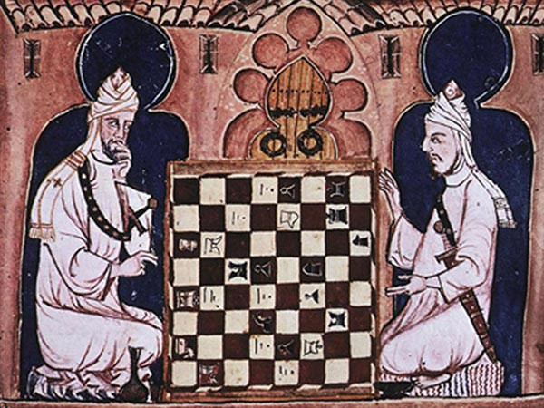

History of Chess:
Chess, often referred to as the "game of kings," has its roots in ancient India where it was known as "Chaturanga," meaning "four divisions of the military" – infantry, cavalry, elephants, and chariotry. By the time it reached Persia, the game became known as "Shatranj," and with the Muslim conquest of Persia, chess spread to the Islamic world. From there, it traveled to Europe, evolving along the way, leading to the modern form we recognize today.
World's Best Players:

Throughout history, the world of chess has been graced by prodigious talents and iconic figures. From the strategic mastery of José Raúl Capablanca and the brilliance of Bobby Fischer to the unparalleled consistency of Anatoly Karpov. However, the modern era is dominated by Grandmaster Magnus Carlsen, the Norwegian prodigy who has held the World Chess Championship title since 2013. He, along with other notable players like Viswanathan Anand, Garry Kasparov, and Judit Polgár, have left indelible marks on the chess world, pushing the boundaries of strategic play and elevating the game's global prestige.
My Love for the Game:
The allure of chess lies not just in its competitive nature, but in the cerebral dance of strategy and counter-strategy, playing out across 64 squares. Every move, every piece, and every strategy echoes life's broader lessons about patience, foresight, and resilience. Beyond the challenge of outthinking an opponent, chess offers a timeless connection to a rich tapestry of global history and culture. For me, it's more than a game; it's a mental gymnasium and a canvas upon which countless stories of conquest, defeat, and redemption are painted. Chess is a captivating dance of the mind, where strategy and creativity intertwine seamlessly. Every move tells a story, offering a glimpse into the player's thought process and depth of understanding. The timeless elegance of the board and pieces holds an aesthetic appeal, while the game's rich history offers layers of intrigue. Each match is a journey of unexpected turns, challenging one's patience, foresight, and resilience. The joy of outthinking an opponent and the lessons learned from both victory and defeat are what make chess an endlessly enchanting game.